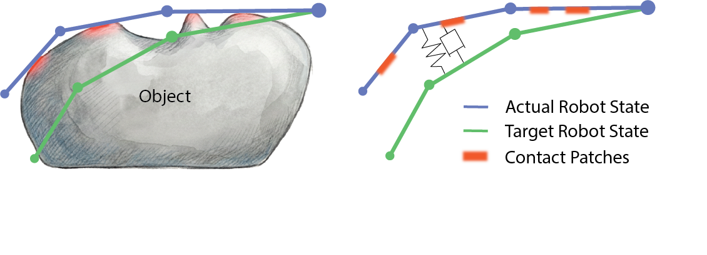

Contact-Grounded Policy enables the acquisition of contact-rich dexterous manipulation skills. For these tasks, the policy must go beyond pick-and-place, leveraging multi-finger control to adjust contacts in real time and achieve appropriate, stable interactions.
Fragile Egg Grasping (Sim)
Dish Wiping (Sim)
In-Hand Box Flipping (Sim)
Jar Opening (Real)
In-Hand Box Flipping (Real)
We developed two teleoperation pipelines. For the real robot, we use a mocap-based hand-tracking teleoperation system; for simulation, we use a VR-based teleoperation setup. Together, these pipelines provide real-time, smooth, stable, and responsive teleoperation for complex manipulation behaviors, enabling high-quality data collection.
We implement a joint-space PD controller for the hand and an operational-space impedance controller for the arm, enabling whole-body compliance across the arm–hand system. This provides a foundation for deploying contact-rich dexterous manipulation policies in real-world settings.
With a unified latent tactile diffusion design, Contact-Grounded Policy supports both vision-based tactile sensors (left) and dense tactile arrays (right).
Four-Finger Allegro V5 Hand with Digit360 Fingertip Tactile Sensors
Five-Finger Tesollo DG-5F Hand with Dense Whole-Hand Tactile Arrays
At each inference step, the diffusion model predicts the next 16 steps of tactile feedback and actual states, which are mapped to target states and executed for 8 steps before the next inference. To verify that predicted contacts are actually realized during execution, we time-align tactile frames predicted at earlier replanning steps with tactile feedback observed at the corresponding future time steps. Predicted tactile is time-aligned with subsequent observations after execution, and the close match indicates that CGP executes contact-grounded targets and realizes the predicted contact evolution.
Contact-Grounded Policy is robust to visual disturbances, and can continue completing the box-flipping task even under dynamic visual perturbations.
Contact-Grounded Policy
Contact-Grounded Policy
Visuomotor Diffusion Policy
Slip During Flipping
Visuotactile Diffusion Policy
Incomplete Flip
 2Meta Reality Labs Research
3University of Wisconsin–Madison
2Meta Reality Labs Research
3University of Wisconsin–Madison
@article{xu2026cgp,
title={Contact-Grounded Policy: Dexterous Visuotactile Policy with Generative Contact Grounding},
author={Xu, Zhengtong and Wang, Yeping and Abbatematteo, Ben and Preechayasomboon, Jom and Chan, Sonny and Colonnese, Nick and Memar, Amirhossein H.},
year={2026},
}Existing policies typically predict purely kinematic targets, without modeling the contact state or how their action outputs interact with low-level controller dynamics. As a result, when deployed in unseen scenarios, they can produce physically infeasible behaviors—for example, overly stiff motions or insufficient force that leads to slipping.
Overly Stiff Motions
Insufficient Force
A key observation is that, under a fixed tactile sensor and compliance controller setup, contact can be captured by a triplet: the robot’s actual state, tactile feedback, and the controller reference (target state), as illustrated in Fig. (a). Building on this coupling, our policy grounds multi-point contacts by predicting coupled trajectories of robot state and tactile feedback, and using a learned contact-consistency mapping to translate these predictions into executable target states for the compliance controller, as shown in Fig. (b). This yields a compact, implicit, setup-dependent model learned purely from data—without explicitly modeling contact locations/modes or system dynamics—while remaining flexible to distributed, evolving multi-point contacts that are hard to parameterize by hand. In this way, contact becomes a controller-realizable state that can be directly executed by the low-level controller.

(a) Schematic of Contact Grounding Using a 3-DoF Revolute Finger

(b) Pipeline of Contact-Grounded Policy